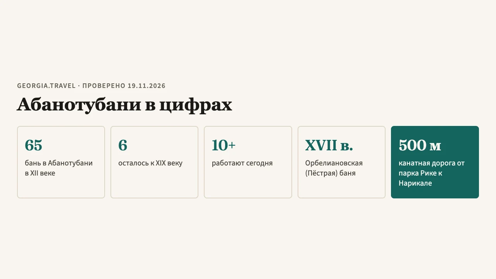

- Бань в XII веке
- 65
- Работают сегодня
- больше 10
- Пёстрая баня
- XVII в.
- Канатка к Нарикале
- 500 м
- Скорая
- 112
Статья входит в «Путеводитель по Грузии».
Абанотубани: квартал серных бань
Название так и переводится: «район бань». По-грузински «абано» — баня, «убани» — район, объясняет Национальная администрация туризма Грузии (на английском).
Абанотубани вырос вокруг горячих источников в историческом центре Тбилиси. На правом берегу речки Цавкисисцкали из земли поднимаются низкие кирпичные купола. Это крыши бань, и через них, пишет тот же сайт, выходит жар.
Сколько бань. Меньше, чем раньше. По странице о квартале (на английском), в XII веке здесь было 65 бань, к XIX веку осталось шесть, а сегодня работает больше 10. На другой странице того же сайта — больше 60 бань в Средние века и меньше дюжины сегодня.
Легенда. С горячей водой связана история основания города. Царь Вахтанг Горгасали охотился в этих местах, и его охотничья птица погналась за раненым фазаном. Позже обеих птиц нашли в кипящем источнике. Царь решил построить у горячих источников город.
Что это была за птица, зависит от версии. На одной странице georgia.travel — ястреб-перепелятник, на другой — сокол и год около 455-го. Слово «тбили» значит «тёплый»: отсюда, по преданию, и название Тбилиси. Это легенда, а не история. На улице Абано стоят статуи ястреба и фазана из неё.
Дюма. В 1858 году французский писатель Александр Дюма больше месяца жил в Тбилиси и часто ходил в бани. Уезжал он, по словам georgia.travel, с тревогой, что в родном Париже так понежиться в воде не получится.
Горожане приходили сюда не только мыться. Здесь встречались по делам, праздновали с друзьями, а будущие свекрови присматривали невест.
Рядом — мечеть Джума. По georgia.travel, это единственная мусульманская святыня Тбилиси, построена в XVIII веке.

Орбелиановская (Пёстрая) баня
Одну из самых узнаваемых бань квартала узнают по фасаду в цветной керамической плитке. georgia.travel называет её Орбелиановской баней XVII века, которую больше знают как Пёструю, по-грузински Чрели Абано. Плитка, добавляет сайт, напоминает мотивы исламского декора.
Стоит она в конце улицы Абано. Посмотрите на фасад с улицы, даже если пойдёте париться в другое место.

Наш совет. Пройдите улицу Абано до конца пешком: там Орбелиановская, а рядом начинается тропа к водопаду.
Как устроены серные бани
Можно взять общий зал или отдельный номер: в большинстве бань, по georgia.travel (на английском), есть номера разного уровня. Сначала обычно лежат в горячей серной воде, потом делают кисе — жёсткий скраб грубой тканью. Во многих местах предлагают и массаж.
Польза — только поверье. Тот же сайт пишет: считается, что купание в серной воде улучшает состояние кожи, облегчает боль в суставах и усиливает кровообращение. Но это туристический сайт, а не медицинский. Медицинских подтверждений мы не нашли, так что идите сюда за историей и отдыхом, а не за лечением.
Часы и цены. У каждой бани свои, и они меняются — уточняйте на месте. georgia.travel советует заранее проверять часы работы: у разных бань они разные. Цены тоже у каждой свои, а кисе и массаж оплачиваются отдельно.
Бани работают круглый год. Больше всего людей летом и в начале осени, а туристы чаще приходят вечером. Свободнее утром, днём и в будни. Номеров немного, поэтому в сезон их лучше бронировать заранее.
Наш совет: когда бронируете, спросите:
- общий зал или отдельный номер;
- сколько длится сеанс;
- входят ли полотенца, простыни и шлёпанцы;
- сколько стоят кисе и массаж;
- где оставить ценные вещи.
Наш совет: возьмите шлёпанцы, бутылку воды и сменную одежду.
Другие курорты с минеральной водой — в наших путеводителях по Боржоми и Цхалтубо.
Кому осторожно: давление, беременность, алкоголь
Горячая вода подходит не всем. Осторожнее стоит быть при беременности, высоком давлении, после алкоголя и если врач велел избегать умеренных нагрузок.
Официального списка, кому серные бани противопоказаны, для Тбилиси мы не нашли. Ниже — что медицинские источники пишут о горячих ваннах и саунах.
Давление
Если давление под контролем, сауну обычно переносят. Так пишет Американская кардиологическая ассоциация (AHA, на английском). Она говорит о саунах и горячих ваннах, а не о Грузии.
- не переходите из холодной воды в горячую и обратно: давление может подняться;
- если врач велел избегать умеренных нагрузок, с горячими ваннами и саунами нужна осторожность;
- есть сомнения — спросите врача.
Наш совет: если у вас хроническая болезнь, спросите врача ещё дома, до поездки.
Беременность
Запрета нет, но нужна осторожность: горячая вода может поднять температуру тела, а это может навредить плоду. Так пишет медицинская библиотека американской детской больницы Montefiore (на английском).
- сидите в горячей воде не дольше 10 минут;
- стало слишком жарко — выходите.
Перед поездкой спросите своего врача, подходит ли вам горячая вода.
Алкоголь
Не смешивайте. AHA прямо пишет: алкоголь и сауна — плохое сочетание.
Британская организация Drinkaware (на английском) объясняет почему. Алкоголь обезвоживает, а вместе с жарой повышает риск обезвоживания, теплового истощения и теплового удара. Drinkaware пишет о жаркой погоде, но в горячей воде логика та же. Наш совет: пейте воду, а вино оставьте на ужин.

После бани
После горячей воды — душ с мылом. Так советуют Центры по контролю и профилактике заболеваний США (CDC, на английском):
- снимите купальник и примите душ с мылом, когда вышли из воды;
- сыпь усиливается — покажитесь врачу;
Легионеллёзом (на английском), по CDC, чаще болеют люди от 50 лет, нынешние и бывшие курильщики, люди с хроническими болезнями лёгких и слабым иммунитетом. Если в течение двух недель после горячей воды появились кашель, одышка, температура или ломота в мышцах, CDC советует сразу обратиться к врачу.
Важная оговорка: CDC пишет о джакузи, где вода ходит по кругу, — о тбилисских банях там прямо ничего нет.

Наш совет. Плохо в воде — выходите медленно, держась за опору, и скажите персоналу. После горячей воды не поднимайтесь сразу в гору по жаре: посидите в тени и выпейте воды.
Нарикала, Мать Грузии и Легвтахеви
Над кварталом по гребню холма тянутся стены старой крепости. Три достопримечательности стоят рядом.
По Национальной энциклопедии Грузии (на английском), с IV по XVIII век крепость встречается в грузинских и иностранных источниках под разными именами — Кала, Шурисцихе и другими. Название «Нарикала» впервые появляется в записях XVII века.
Открыта ли сейчас для посещения верхняя часть стен, уточняйте на месте — например, в гостинице или у станции канатной дороги.

Канатная дорога
Это самый лёгкий путь наверх. По georgia.travel (на английском), она соединяет парк Рике с древней крепостью Нарикала, длина — 500 м.
Цен и часов на странице нет, поэтому не даём их и мы: уточняйте на станции. Пешком из квартала тоже можно. Наш совет: идти в гору — нужна удобная обувь.
Мать Грузии (Картлис Деда)
Это 20-метровая алюминиевая статуя на вершине холма Сололаки: она смотрит на город, пишет georgia.travel (на английском). Автор — грузинский скульптор и художник Элгуджа Амашукели.
Статую поставили в 1958 году, к 1500-летию Тбилиси, а в 1997-м заменили такой же новой. В левой руке у неё чаша с вином — знак гостеприимства, в правой — меч против врагов.
Водопад Легвтахеви
К водопаду ведёт тропа от конца улицы Абано. По georgia.travel (на английском), впервые его упоминают в исторических источниках в 1429 году, а находится он ниже Нарикалы. По ущелью течёт речка Цавкисисцкали.
В 2012 году ущелье обновили: отремонтировали дома с балконами, построили мостики и лестницы, поставили скамейки, открыли кафе.
Открыт ли проход сейчас, сказать не можем. Деловое издание bm.ge (на английском) сообщало: пока не устранят риск камнепадов, движение туристов там ограничено. О снятии ограничения мы ничего не нашли — уточняйте на месте и не заходите за ограждения.
Наш совет. Маршрут на полдня: фасад Орбелиановской → улица Абано → водопад, если проход открыт → подъём к крепости и Матери Грузии → вниз на канатной дороге. Горячую воду оставьте на конец дня, чтобы не идти в гору после неё.
Если стало плохо
Срочно — звоните 112. GOV.UK (на английском) советует набрать 112 и попросить скорую — по-английски ambulance.
Если врач нужен не срочно — например, сыпь не проходит, — клиники собраны в каталоге клиник Тбилиси на 100doc.ge.
Преступность в Грузии, по GOV.UK (на английском), низкая, но в людных местах берегитесь карманников.
Для въезда в Грузию иностранцу нужен полис с покрытием не меньше 30 000 лари — подробнее в нашем разделе о полисе для въезда.
Наш совет. Сохраните в телефоне 112 и адрес жилья, чтобы быстро назвать его диспетчеру.
Частые вопросы
Можно ли в баню при повышенном давлении?
Можно ли в баню при беременности?
Можно ли пить алкоголь в бане?
Сколько стоят серные бани в Тбилиси?
У каждой бани свои цены и часы, и они меняются. Уточняйте на месте.
Что такое Орбелиановская баня?
Постройка XVII века в конце улицы Абано. Её называют Пёстрой, по-грузински Чрели Абано, — за фасад в цветной керамической плитке.
Когда впервые упоминается Нарикала?
Как дойти до водопада Легвтахеви?
Источники
- georgia.travel: квартал Абанотубани — история, легенда, Пёстрая баня, Дюма (на английском) ↑
- georgia.travel: как устроены серные бани — название, часы, поверье о пользе (на английском) ↑
- georgia.travel: Мать Грузии (Картлис Деда) (на английском) ↑
- georgia.travel: Легвтахеви (на английском) ↑
- georgia.travel: канатная дорога от парка Рике (на английском) ↑
- Национальная энциклопедия Грузии: крепость над Абанотубани (на английском) ↑
- AHA: давление, сауны и горячие ванны (на английском) ↑
- Children's Hospital at Montefiore: горячая ванна и сауна при беременности, 10 января 2026 года (на английском) ↑
- CDC: сыпь после джакузи (на английском) ↑
- CDC: легионелла и джакузи (на английском) ↑
- Drinkaware: алкоголь в жару (на английском) ↑
- GOV.UK: преступность, карманники (на английском) ↑
- GOV.UK: здоровье, 112 (на английском) ↑
- bm.ge: ограничение прохода в Легвтахеви (на английском) ↑
Это справочная информация, а не медицинская консультация: можно ли вам в горячую воду, решает врач. Проверено 19 ноября 2026 года.